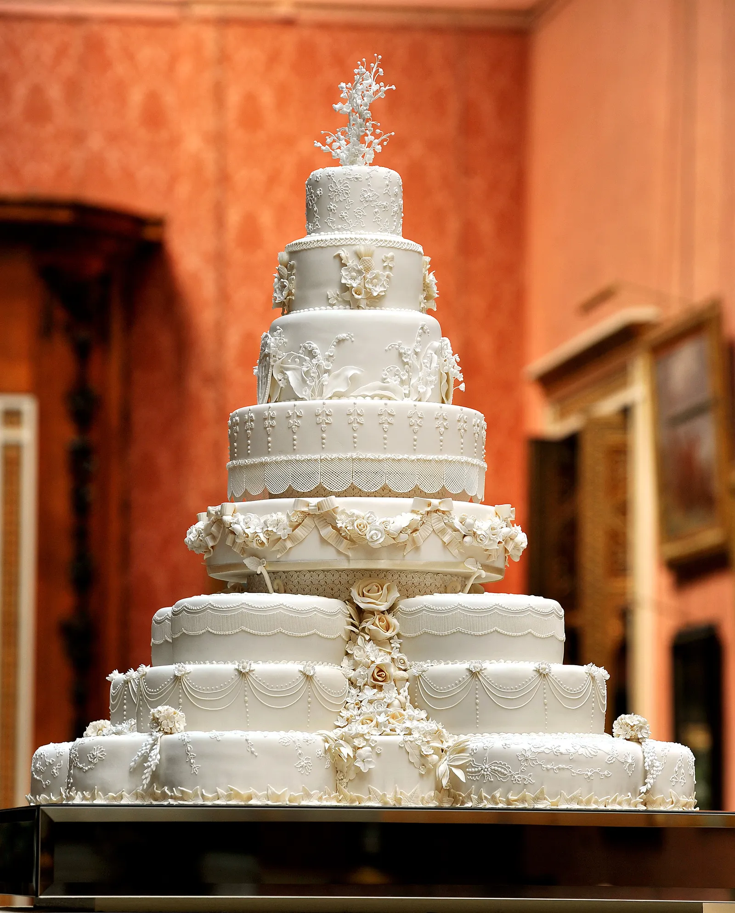
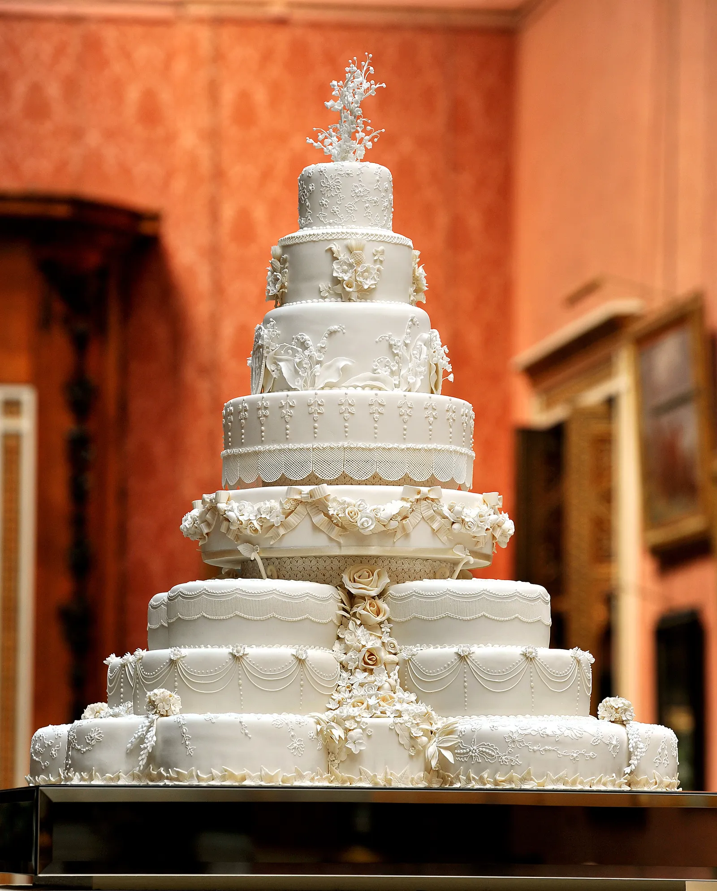

What do you know about cake? I'm sure you never check this out you just eat cake, that's all. Anyways, according to Wikipedia, Cake is a flour confection made from flour, sugar, and other ingredients and is usually baked. In their oldest forms, cakes were modifications of bread, but cakes now cover a wide range of preparations that can be simple or elaborate and which share features with desserts such as pastries, meringues, custards, and pies. The most common ingredients include flour, sugar, eggs, fat (such as butter, oil, or margarine), a liquid, and a leavening agent, such as baking soda or baking powder. Common additional ingredients include dried, candied, or fresh fruit, nuts, cocoa, and extracts such as vanilla, with numerous substitutions for the primary ingredients. Cakes can also be filled with fruit preserves, nuts, or dessert sauces (like custard, jelly, cooked fruit, whipped cream, or syrups), iced with buttercream or other icings, and decorated with marzipan, piped borders, or candied fruit. Cake is often served as a celebratory dish on ceremonial occasions, such as weddings, anniversaries, and birthdays. There are countless cake recipes; some are bread-like, some are rich and elaborate, and many are centuries old. Cake making is no longer a complicated procedure; while at one time considerable labor went into cake making (particularly the whisking of egg foams), baking equipment and directions have been simplified so that even the most amateur of cooks may bake a cake.

 
